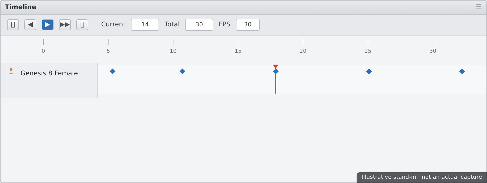
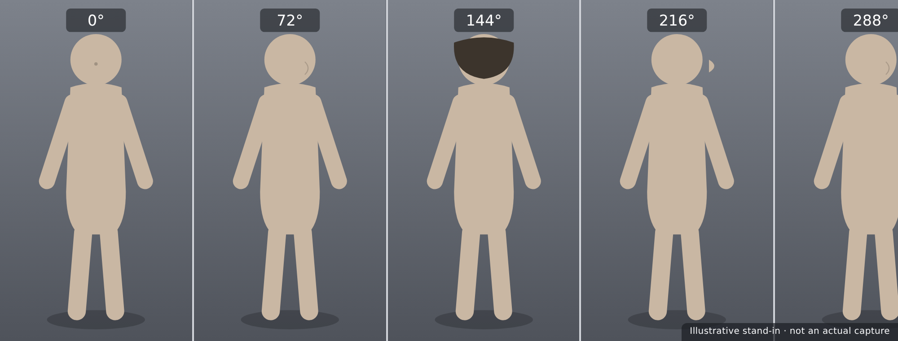

🎬 Lesson 4.2: Animation Basics with the Timeline
You've built a character that poses, drapes, lights, and renders as a still — now let's make it move. Animation in Daz is more approachable than it looks: you set a pose at one moment, a different pose at a later moment, and Daz fills in everything between. In this lesson you'll learn keyframes and interpolation, navigate the Timeline pane, meet aniMate2 and its drag-and-drop aniBlocks, build a clean 360° turntable of your character, and render the whole thing out as an image sequence you can turn into a video. It's the bridge from portrait artist to motion — and it's the perfect showcase for a finished figure.
🎯 Learning Objectives
By the end of this lesson, you will be able to:
- Explain what keyframes and interpolation are
- Navigate the Timeline pane and set keyframes
- Understand when to use aniMate2 and aniBlocks
- Build a smooth 360° turntable of your character
- Set the frame rate and range for an animation
- Render an image sequence and assemble it into video
- Follow a sensible animation workflow from pose to playback
Estimated Time: 55 minutes
Project: A short 360° turntable animation of your posed, dressed character, rendered as an image sequence and assembled into a shareable video clip.
In This Lesson
From Still to Motion
Animation is just a series of still images — frames — played fast enough that the eye reads them as continuous motion. In Daz, you don't draw every frame; you set a few important poses at specific times and let the software calculate the in-between frames automatically. That calculation is the heart of computer animation.
💡 The one-sentence version: You define key poses at chosen moments (keyframes), and Daz interpolates the frames between them, producing smooth motion from just a handful of set positions.
📖 Definition
Frame rate (fps): how many frames play per second — commonly 30 or 24 for video. Frame range: the total number of frames in your animation. A 5-second clip at 30 fps is 150 frames. Set both before animating so your timing math works out.
Because Daz fills the gaps for you, animation becomes a matter of deciding what should happen and when — not hand-placing hundreds of positions. Nail a few key moments and the software makes them flow.
💡 Rendering animation is rendering, times N frames
Every frame of an animation is a full Iray render. A 150-frame turntable is 150 renders — so animation render times add up fast. This is why turntables and simple motions are the right first projects: they look impressive without demanding hundreds of heavy, softly-lit frames.
⚠️ Important Note: Set your frame rate and range first. Changing the frame rate after animating rescales your timing and can throw off carefully placed keyframes. Decide "5 seconds at 30 fps" up front, and animate within that plan.
Keyframes & Interpolation
The two words that unlock all of animation are keyframe and interpolation. Understand them and everything else is just interface.
📖 Definition
Keyframe: a recorded value (a pose, a position, a rotation) at a specific frame. Interpolation: the automatic calculation of the values between two keyframes, so the figure moves smoothly from one to the next instead of jumping.
To animate the simplest possible move: go to frame 0, set a pose (that creates keyframes); go to frame 60, change the pose (new keyframes); play back, and Daz smoothly interpolates the whole journey. That's it — the same pattern scales to any animation.
💡 Interpolation has a "shape" — easing
By default Daz eases motion in and out, so it accelerates and decelerates naturally rather than moving at a robotic constant speed. This TCB / linear interpolation choice lives on the keyframes. Linear is perfect for a constant-speed turntable; eased is better for lifelike body motion.
✅ Pro Tip — use linear interpolation for turntables
A turntable should spin at a perfectly even rate. Set the rotation keyframes to linear interpolation so the figure turns at constant speed with no ease-in/ease-out. Eased interpolation would make the spin slow at the start and end — fine for a gesture, wrong for a smooth 360°.
⚠️ Important Note: Keyframes record whatever changed at that frame. If you accidentally nudge a light, camera, or morph while on a later frame, you may create keyframes you didn't intend — leaving something drifting through the animation. When motion looks odd, inspect the Timeline for stray keys.
The Timeline Pane
The Timeline pane (Window → Panes → Timeline) is your basic, precise animation tool. It shows the current frame, a playhead you scrub, and the keyframes on whatever's selected — the direct, keyframe-level control under everything.

Timeline essentials
| Control | What it does | Notes |
|---|---|---|
| Current Frame | Which frame you're viewing/editing | Move here before making a change to key it |
| Total Frames | The length of the animation | Frames ÷ fps = duration in seconds |
| Playhead / Scrubber | Drag to preview motion frame by frame | Fast way to check timing without rendering |
| Keyframe markers | Show where values are recorded | Select and move them to retime |
✅ Pro Tip — scrub before you render
Dragging the playhead is a free, instant preview of your motion in the OpenGL viewport. Scrub the whole range and watch for hitches, foot-slides, or intersections before committing to a long Iray render. Fixing timing at the scrub stage costs seconds; fixing it after a render costs hours.
⚠️ Important Note: The Timeline shows keys for the currently selected node. If you don't see the keyframes you expect, you may have the wrong item selected — select the figure (or the specific bone, camera, or light) whose animation you want to inspect or edit.
aniMate2 & aniBlocks
Where the Timeline is precise and manual, aniMate2 is fast and library-driven. It's a separate animation pane that works with aniBlocks — pre-made motion clips you drag onto a track and combine, like audio loops in a music app.
📖 Definition
aniMate2: a timeline-style pane for assembling animation from aniBlocks — ready-made motion clips (a walk, a wave, an idle) you drag, drop, trim, and blend. It's the quickest way to get believable full-body motion without keyframing every joint by hand.
Timeline vs aniMate2
| Approach | Strength | Best for |
|---|---|---|
| Timeline (keyframes) | Exact, custom control over every value | Turntables, precise custom moves, fixes |
| aniMate2 (aniBlocks) | Fast, pre-animated, believable body motion | Walks, gestures, idles, quick shots |
💡 They work together
You can build a base with aniBlocks in aniMate2, then bake it to the Timeline (Studio keyframes) to fine-tune individual poses. Many artists rough in motion with aniBlocks for speed, then polish specific frames with keyframes for control — best of both tools.
⚠️ Important Note: aniBlocks are authored for specific figure generations (e.g. Genesis 8). A block made for one generation may not fit another cleanly. Match aniBlocks to your figure's generation, or expect to retarget/adjust — mismatches cause odd limb positions.
Building a Turntable
The perfect first animation is a turntable — your character rotating a full 360° so viewers see them from every angle. It's simple, it's the industry-standard way to show off a model, and it needs just two keyframes.
📖 Definition
Turntable: an animation where the subject (or the camera) rotates a full 360° at constant speed, revealing the model from all sides. It's the classic portfolio piece for a 3D character — a rotisserie tour of your work.
Two ways to spin
- Rotate the figure — group the figure (or use its root) and keyframe Y-rotation from 0° at frame 0 to 360° at the last frame. Simplest approach.
- Orbit the camera — keep the figure still and rotate the camera around it. Better when a floor, hair sim, or dForce drape should stay physically settled.
✅ Pro Tip — rotate the camera when physics is involved
If your character has a dForce drape or hair sim, spinning the figure can disturb the settled cloth. Instead, keep the figure planted and orbit the camera around it — the drape stays perfect and only the viewpoint moves. Cleaner turntables, no re-simulating.
⚠️ Important Note: For a seamless loop, the first and last frames must match. Rotate exactly 360° and make sure interpolation is linear, or you'll get a visible stutter or speed change at the loop point. A turntable that hitches on repeat almost always has non-linear keys or an off-by-a-frame range.
Rendering to Video
Animation done, it's time to render. The professional habit is to render an image sequence — one file per frame — rather than straight to a movie file, then assemble those frames into video afterward.
📖 Definition
Image sequence: an animation rendered as numbered still images (frame_0001.png, frame_0002.png, …) instead of a single video file. Each frame is a full render; the sequence is later encoded into a video with Daz or an external tool.
In Render Settings, choose to render the animation (the frame range, not just the current frame) and set the output. Rendering to a sequence has real advantages:
| Benefit | Why it matters |
|---|---|
| Crash-safe | If Daz crashes at frame 120, you keep frames 1–119 and resume |
| Re-encode freely | Make MP4, GIF, or different resolutions from the same frames |
| Fix single frames | Re-render only a bad frame instead of the whole clip |
⚠️ Important Note: Animation renders are long — budget accordingly. Use a lower resolution and a denoiser-friendly sample cap for motion tests, and reserve full-res renders for the final. A 5-second clip that's clean at test quality beats a gorgeous one you never finish because each frame took ten minutes.
An Animation Workflow
Animation rewards planning. Here's a dependable order that keeps render time and rework under control.
| Step | Do this | Why |
|---|---|---|
| 1. Plan | Set frame rate and range (e.g. 150 frames @ 30 fps) | Timing depends on this being fixed first |
| 2. Animate | Keyframe the motion (or drop aniBlocks) | Define the key moments; Daz fills the rest |
| 3. Preview | Scrub the Timeline in the viewport | Catch hitches before rendering anything |
| 4. Test render | Low-res sequence to check motion + lighting | Cheap proof before the expensive pass |
| 5. Final | Full-res image sequence, then encode to video | Crash-safe frames you can re-encode anytime |
💡 Simulate after animating, across the range
If your animated character wears dForce cloth, run the simulation over the full Timeline range so the fabric moves with the motion, not just one frame. Order matters: animate the body first, then simulate cloth across the whole clip, then render — reversing this means re-simulating.

⚠️ Important Note: Keep the scene file and the rendered frames both. The frames are your deliverable; the scene lets you re-render at a higher resolution, adjust lighting, or extend the animation later. As with stills, the render is the output and the scene is the recipe.
Hands-on: Turntable
Let's build and render a 360° turntable of your character — set the range, create the spin, preview it, then render a sequence.
🏋️ Exercise 1: Set Up & Keyframe
Objective: Create a two-keyframe 360° spin.
Steps:
- Set your animation to 150 frames at 30 fps (a 5-second clip) in the Timeline.
- At frame 0, key the camera (or figure) at its start; at frame 150, rotate a full 360° around the figure and key it.
- Set the rotation keyframes to linear interpolation for constant speed.
🏋️ Exercise 2: Preview & Refine
Objective: Confirm smooth, seamless motion before rendering.
Steps:
- Scrub the playhead across the whole range in the viewport and watch the rotation.
- Confirm the spin is even and the first and last frames match for a clean loop.
- Check nothing else is accidentally animated — no drifting lights, morphs, or cloth.
💡 Hint — my turntable stutters when it loops
Two usual causes. First, interpolation: set the rotation keys to linear so speed is constant rather than easing in and out. Second, the loop point: rotating a full 360° means frame 0 and frame 150 show the same angle, which can double-up on loop — try ending the 360° one frame before the last frame, or rotate to just under 360°, so the loop is seamless.
🏋️ Exercise 3: Render the Sequence
Objective: Output an image sequence and encode it.
Steps:
- In Render Settings, choose to render the animation range and set output to a numbered image sequence (PNG).
- Do a quick low-res test first; when happy, render the full sequence.
- Encode the frames to a video (in Daz or an external tool) and save the scene.
🎯 Quick Quiz
Question 1: What does interpolation do in an animation?
Question 2: Your character has a dForce drape. What's the cleaner way to build a turntable?
Question 3: Why render an animation as an image sequence rather than straight to a movie file?
Best Practices
✅ Do's
- Set frame rate and range first — timing depends on it.
- Scrub the Timeline to preview motion before any render.
- Use linear interpolation for constant-speed turntables.
- Orbit the camera instead of the figure when physics is settled.
- Render image sequences for crash-safety and re-encoding.
- Test at low resolution before committing to the full render.
❌ Don'ts
- Don't change frame rate after animating — it rescales your timing.
- Don't leave stray keyframes on lights, cameras, or morphs you didn't mean to animate.
- Don't render straight to a movie file for anything long — a crash loses it all.
- Don't mismatch aniBlocks to the wrong figure generation.
- Don't simulate dForce on one frame for an animated clip — sim the whole range.
💡 Pro Tips
- Rough in motion with aniBlocks, then bake to the Timeline to polish.
- End a 360° a frame short of the last frame for a seamless loop.
- Keep a low-res "motion test" render setting saved for quick previews.
- Name your frame files with padded numbers so they sort correctly.
- Keep the scene file so you can re-render the sequence larger later.
Summary
🎉 Key Takeaways
- Animation is set poses at chosen frames — keyframes — with Daz interpolating the smooth motion between them.
- The Timeline gives precise keyframe control; aniMate2 + aniBlocks give fast, pre-made body motion, and they combine.
- A turntable needs just two keyframes and linear interpolation; orbit the camera when a dForce drape must stay settled.
- Set frame rate and range first, and remember every frame is a full Iray render, so render time multiplies.
- Render an image sequence — crash-safe and re-encodable — then assemble it into a shareable video.
📚 Additional Resources
- The Timeline — official Daz user guide
- aniMate2 & aniBlocks — Daz documentation
- Animation in Daz Studio
🚀 What's Next?
That's Module 4 done — your character can move, and its cloth moves with it. Now we take the whole figure beyond Daz. In Lesson 5.1 — The Daz to Blender Bridge, you'll install the bridge, export your Genesis figure into Blender with its mesh, rig, and materials, fix up the shaders on the Blender side, and learn when Diffeomorphic is the better route.
💡 Your character moves now!
Keyframes, the Timeline, aniBlocks, a looping turntable, and an image-sequence render — you've crossed from stills into motion. A clean turntable is the classic way to show a 3D character to the world, and you can make one start to finish. Next stop: the bridges that carry this figure into Blender and Unreal.